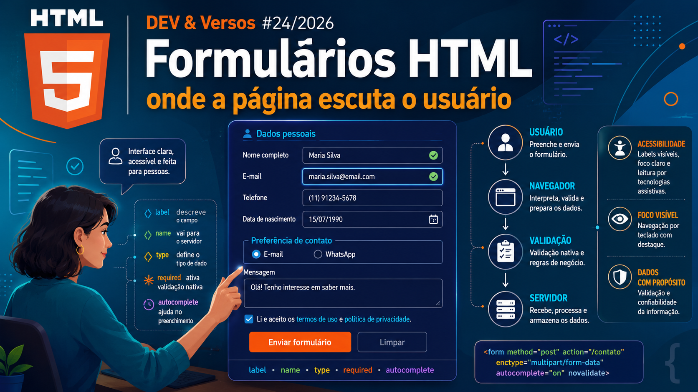
📝 Formulários HTML: onde a página escuta o usuário
Da primeira label à validação no servidor: campos, atributos e os contratos que transformam formulários em uma conversa acessível e segura.
Ler artigoConteúdo
Um espaço para reunir artigos, aprendizados e reflexões da newsletter Dev & Versos — conectando tecnologia, carreira e experiência prática.
Newsletter

Newsletter no LinkedIn
Um espaço para compartilhar conteúdos reais sobre desenvolvimento, carreira, comunidade, aprendizados, erros, acertos e reflexões que fazem parte da jornada de quem vive tecnologia.
Seguir no LinkedInPublicações

Da primeira label à validação no servidor: campos, atributos e os contratos que transformam formulários em uma conversa acessível e segura.
Ler artigo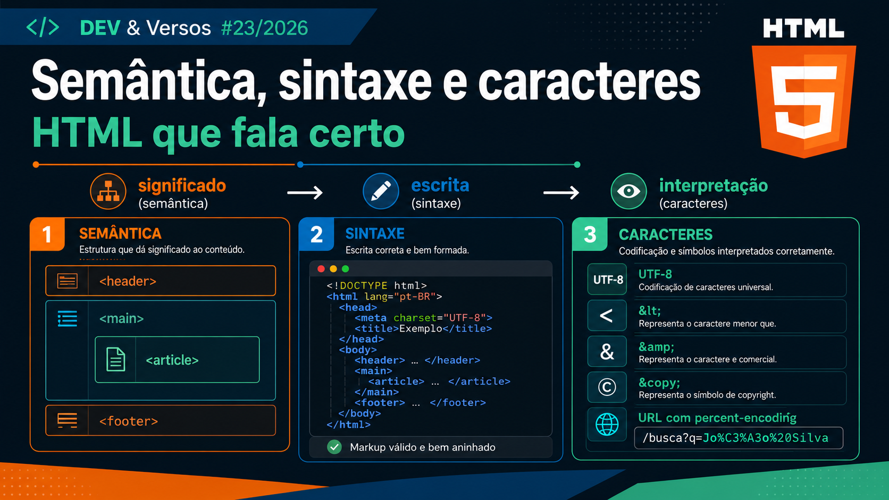
Quando significado, sintaxe e codificação trabalham juntos: semântica, entidades, símbolos, charset e URL encoding para uma página que comunica.
Ler artigo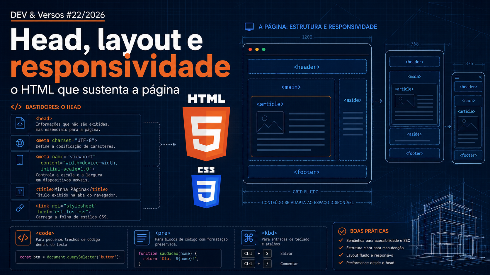
A arquitetura invisível da página: <head>, metadados, layout, responsividade e elementos de código que levam o conteúdo inteiro ao navegador.
Ler artigo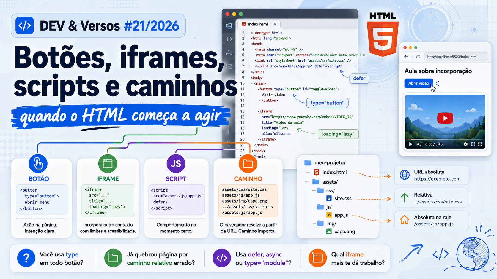
Quando a página deixa de ser só estrutura e passa a agir: <button>, <iframe>, <script> e caminhos de arquivo com segurança e semântica.
Ler artigoAntes das linguagens, o ambiente: editor, terminal, versionamento, contêineres e as ferramentas que sustentam o trabalho de um dev em 2026.
Ler artigo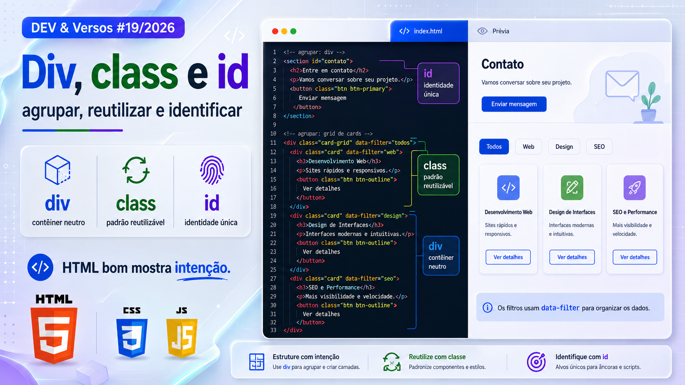
Como usar contêineres, classes e identificadores sem transformar o HTML em uma pilha de nomes improvisados.
Ler artigo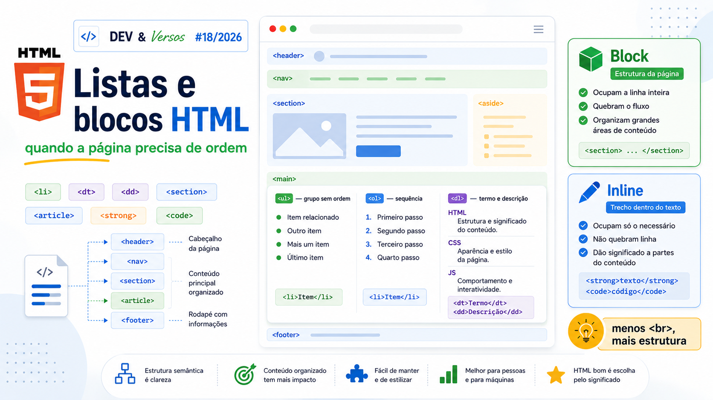
Como escolher entre <ul>, <ol>, <dl> e entender o fluxo entre blocos e inline sem transformar HTML em improviso.
Ler artigo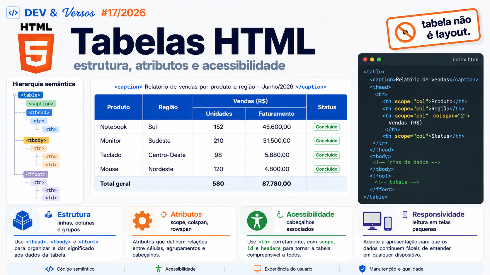
Quando linhas e colunas deixam de ser aparência e passam a representar relações entre dados com semântica, responsividade e acessibilidade.
Ler artigo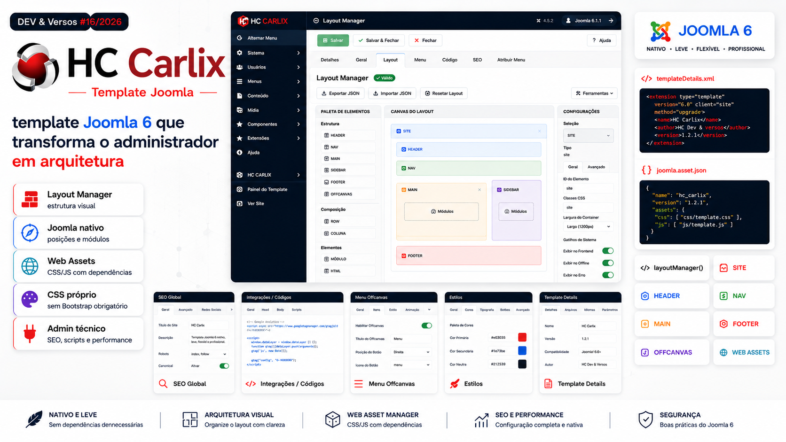
Um template Joomla 6 nativo com Layout Manager, Web Asset Manager, CSS próprio, SEO, scripts, performance e segurança.
Ler artigo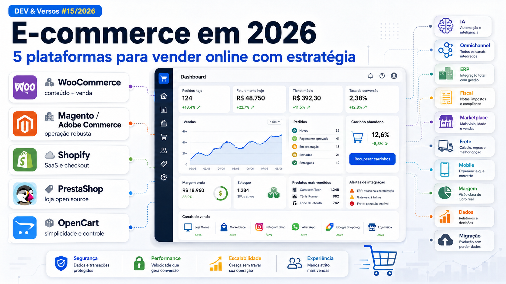
Uma análise técnica e de negócio para escolher plataforma, integrações, operação e crescimento sem decidir apenas por hábito ou hype.
Ler artigo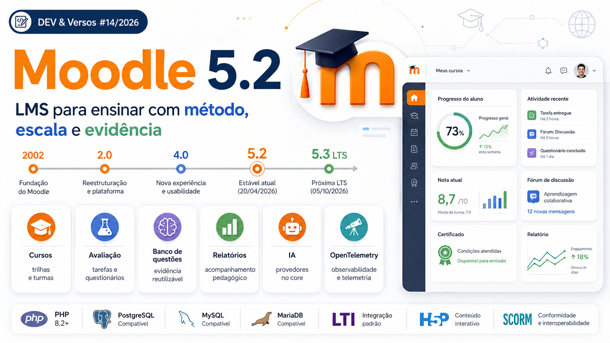
Do “site de cursos” à plataforma de aprendizagem: história, arquitetura, IA, avaliação, relatórios e operação séria com Moodle em 2026.
Ler artigo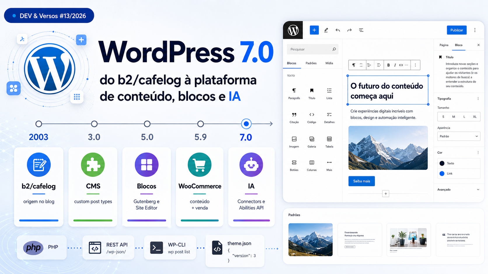
Uma leitura sem idolatria e sem preconceito sobre o ecossistema WordPress, blocos, plugins, arquitetura e decisões de projeto.
Ler artigo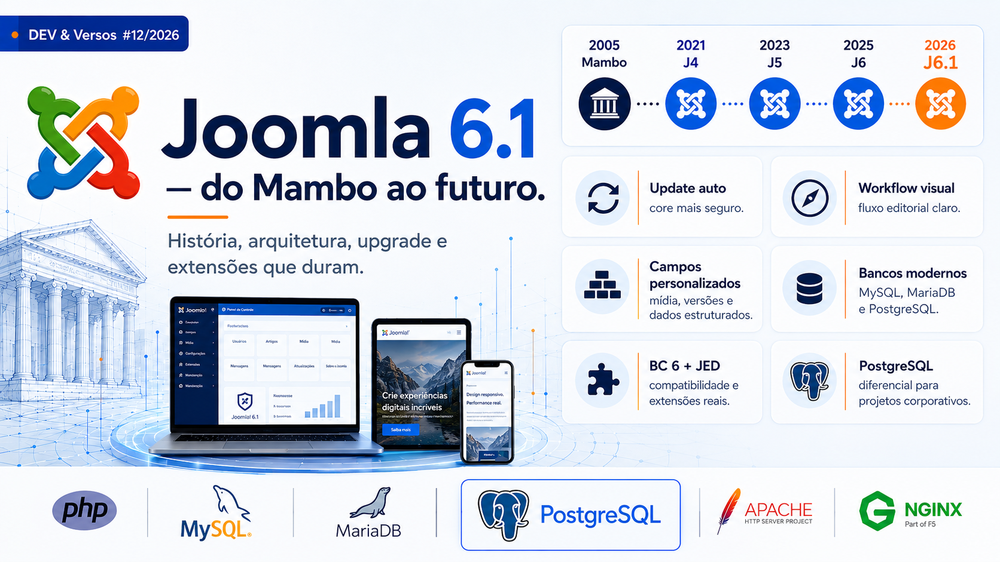
A trajetória do Joomla, sua arquitetura moderna e os cenários em que ele segue forte para portais, intranets e projetos institucionais.
Ler artigo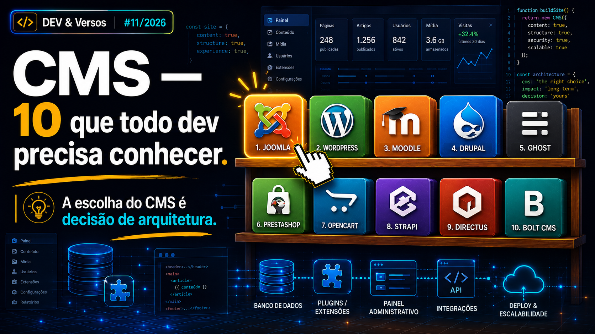
Um mapa prático para entender tipos de CMS, escolher tecnologia com critério e evitar decisões guiadas apenas por hábito.
Ler artigo
Performance não é só carregar rápido. É responder bem quando o usuário clica, digita, abre um menu ou tenta concluir uma ação.
Ler artigo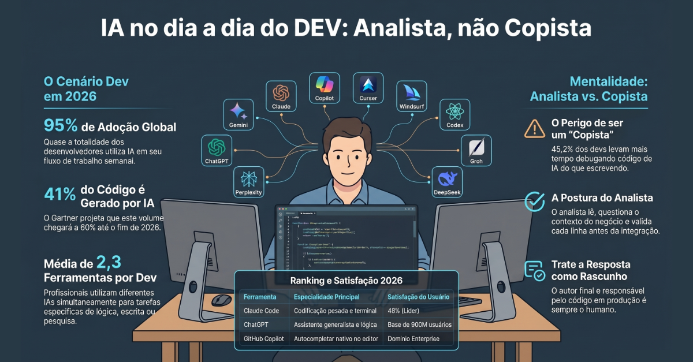
Como Claude, ChatGPT/Codex, Gemini e Copilot entraram na minha rotina, o que dizem os números sobre as 10 IAs mais usadas em 2026, e por que dev sênior usa IA para analisar — não para copiar.
Ler artigo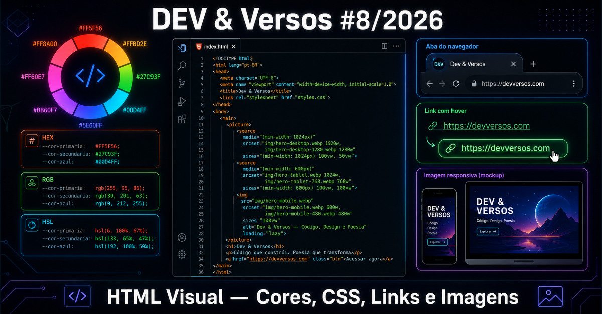
Do fundo branco padrão do navegador às cores reais: RGB, HEX, HSL, links com todos os estados, imagens responsivas com <picture> e favicon — tudo sem framework nenhum.
Ler artigo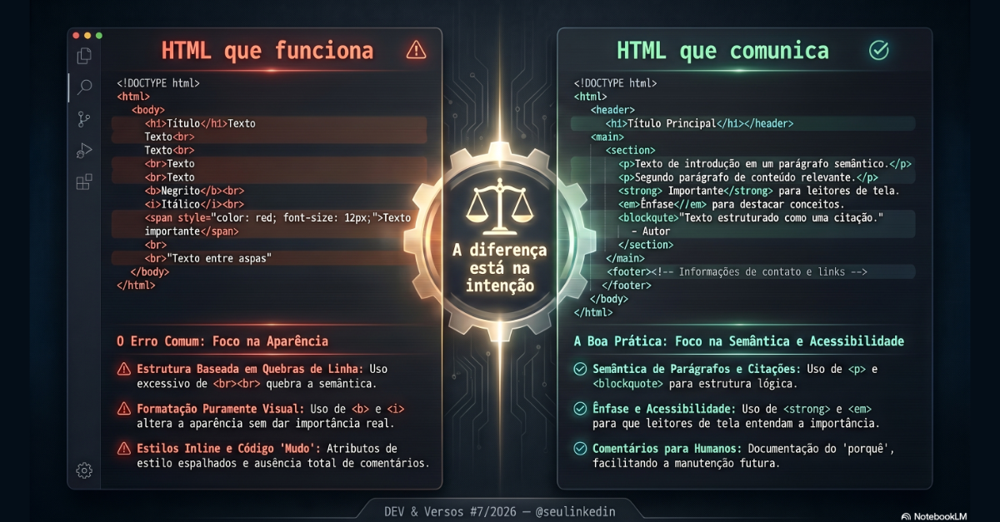
Os detalhes fundamentais do HTML que ajudam a criar páginas mais semânticas, acessíveis e fáceis de manter em projetos reais.
Ler artigo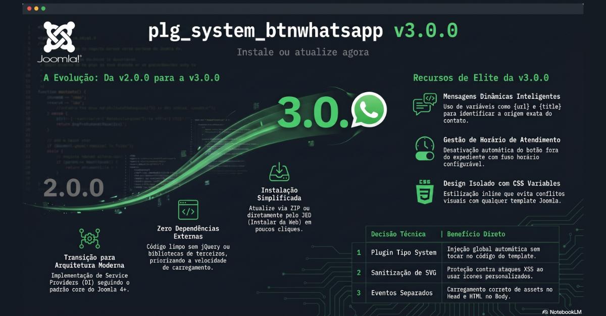
Como criar um botão flutuante moderno para Joomla sem alterar template, usando eventos do core, DI e arquitetura limpa.
Ler artigo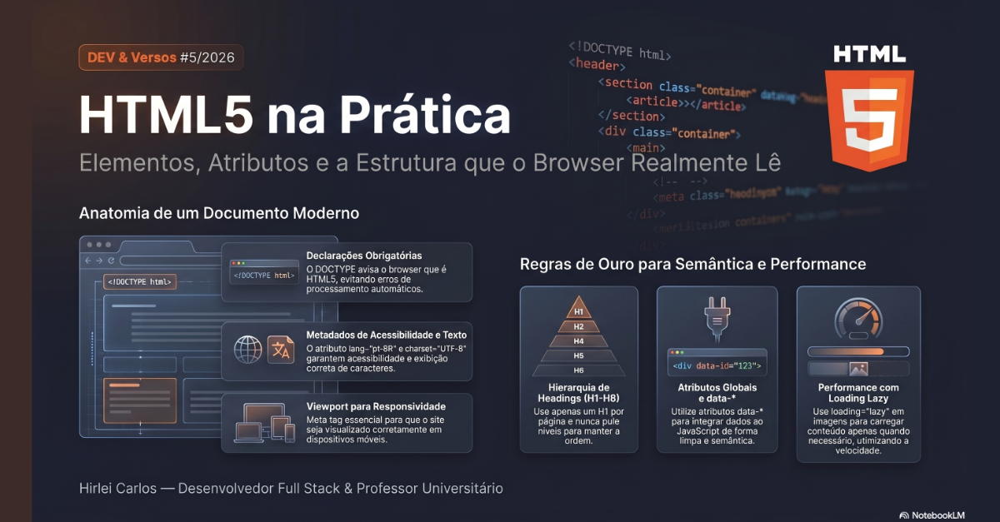
HTML5 não é só decorar tag — é entender o que o browser faz com cada linha. Vídeo, áudio nativo, picture responsivo, atributos globais e data-* na prática.
Ler artigo
Como sair do uso excessivo de divs e construir páginas com semântica, organização e propósito real.
Ler artigo
O papel real do HTML dentro da web e por que entender sua função separa quem monta tela de quem constrói de verdade.
Ler artigo
Front-end vai além da aparência visual — envolve interação, percepção, desempenho, usabilidade e como o usuário realmente vive a aplicação.
Ler artigo
Visão prática sobre evolução técnica, conexão entre camadas, amadurecimento profissional e construção real de software.
Ler artigoSobre
A Dev & Versos nasceu para reunir tecnologia, vivência profissional, pensamento crítico, reflexões, boas práticas, erros, acertos e temas que atravessam o cotidiano de quem trabalha com desenvolvimento.
Aqui entram conteúdos técnicos, humanos e autorais — tanto para quem quer aprender, quanto para quem quer se reconhecer nas experiências reais por trás do código.